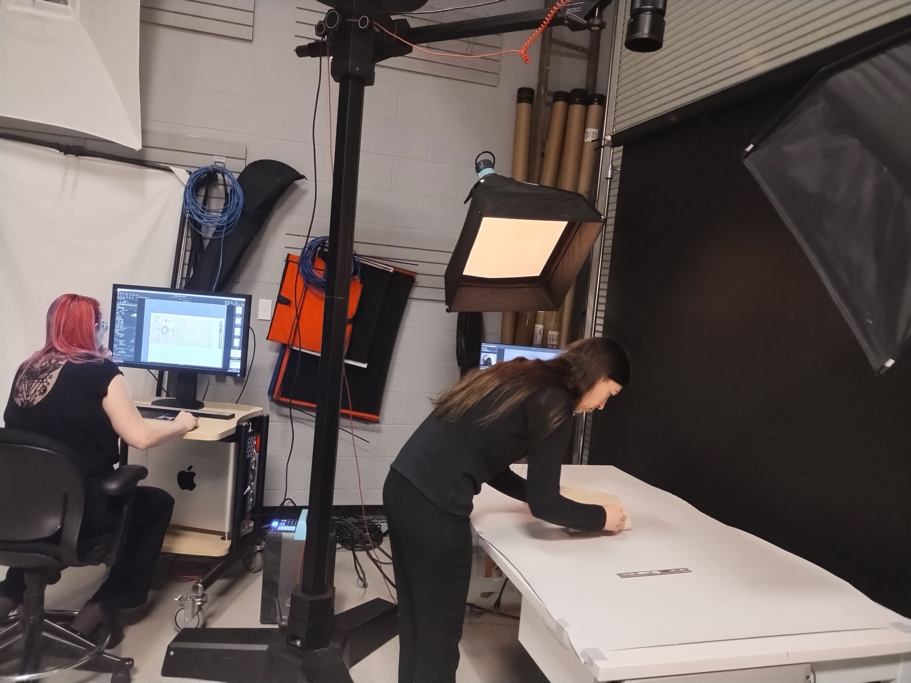
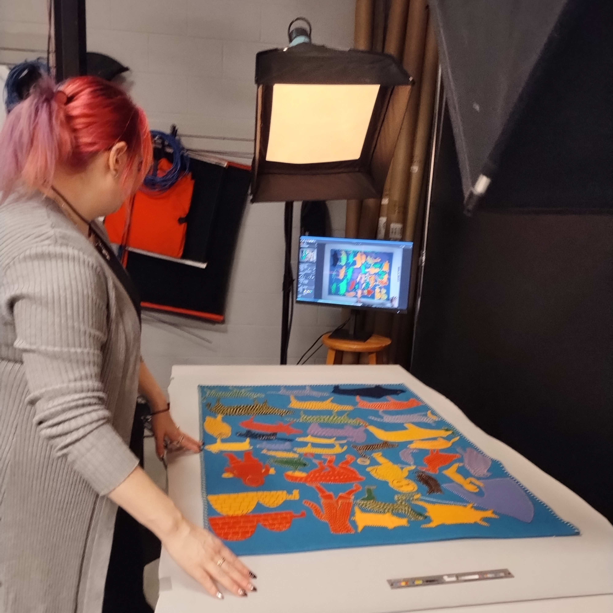
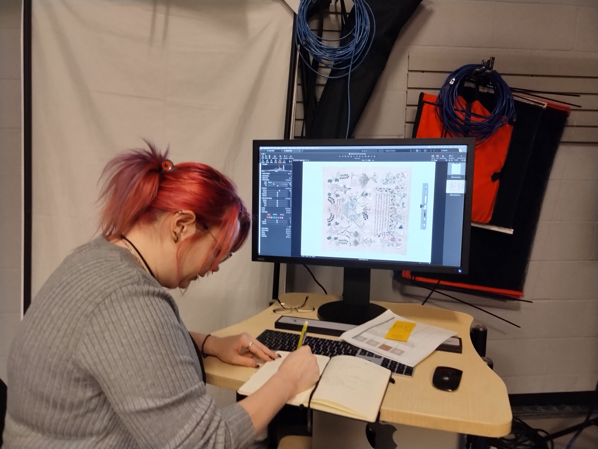

Educate.
Analyze.
Curate.

Objects as the starting point for learning
A dynamic, open repository of materials for teaching and learning with objects from the Education Art Collection at the Cleveland Museum of Art — built in partnership with Cleveland State University.
Students don’t just read about history and culture; they handle it, analyze it, and help curate it.

Analysis, glove‐on
Working directly with original objects, students practice careful observation and material analysis — the same skills used by curators and conservators.
“What is it made of? Who used it, and why does it matter?”

From cuneiform to the seminar room
Faculty bring collection objects — like ancient Mesopotamian tablets — into the heart of the lesson, connecting students to thousands of years of human record-keeping.

Reading culture through art
In religion and the humanities, objects open windows onto belief and ritual — here, a Rajasthani painting of Krishna and Radha at the Holi Festival, ca. 1800.

Capturing objects for the open repository




Cataloging the collection
Beyond the camera, students record, measure, and describe each object in the collection management system — turning artifacts into searchable, shareable knowledge.